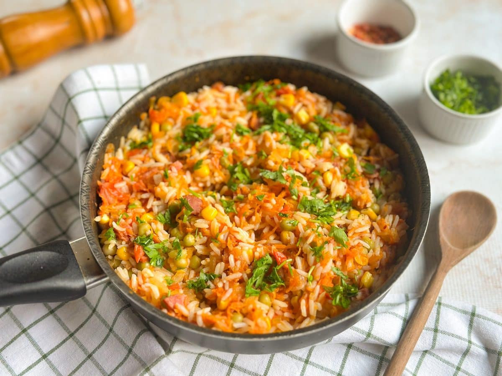

Arroz frito

 20 min
20 min 3 porções
3 porções R$ 7,25
R$ 7,25
Ingredientes
- 3 xícaras (chá) de arroz cozido
- 1 cebola
- 1/2 cenoura
- 1/4 de xícara (chá) de salsinha e cebolinha picadas
- 2 colheres (sopa) de óleo
- 3 ovos
Modo de preparo
- Descasque e fatie a cebola em meias-luas.
- Leve ao fogo baixo uma frigideira, regue com 1 colher (sopa) de óleo e junte a cebola.
- Tempere com uma pitada de sal e deixe cozinhar até a cebola dourar.
- Transfira as cebolas douradas para a tigela com o arroz cozido.
- Em fogo médio, regue com mais um fio de óleo e acrescente a cenoura ralada.
- Refogue por 2 minutos e junte a salsinha e a cebolinha. Desligue o fogo, junte ao arroz e misture bem.
- Leve a panela ao fogo baixo, junte os ovos e mexa rapidamente com uma colher. Quando começar a cozinhar, junte o arroz e misture. Aumente o fogo, tempere com sal e pimenta-do-reino e misture bem. Sirva a seguir.
Agora é só servir! Aproveite cada garfada dessa refeição deliciosa, nutritiva e cheia de carinho. Bom apetite!
Autor: a definir